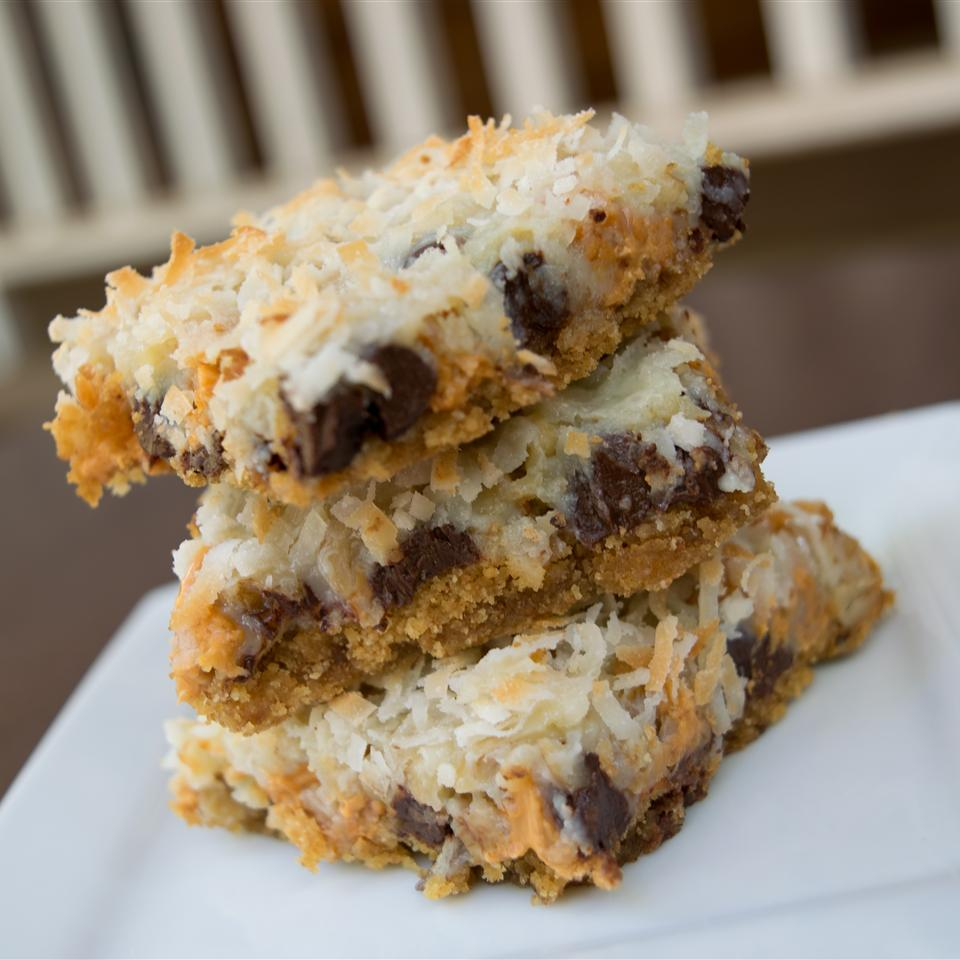

<!DOCTYPE html>
<html lang="en">
    <meta charset="UTF-8">
    <title>Seven Layer Bars</title>
</html>

<body>
    <a href="../index.html">Back Home</a>
    <h1>Seven Layer Bars</h1>
    
    <h3>Nutrition Info</h3>
    <br>Cook : 25 mins</b>
    <br>Additional : 20 mins </b>
    <br>total: 1 hr</b>
    <br>prep: 15 mins</b>
    <br>Servings: 36</b>
    <br>Yield: 3 dozen</b>

    <h2>Ingredients</h2>
    <br>½ cup unsalted butter </b>
    <br>1 ½ cups graham cracker crumbs </b>
    <br>1 cup semisweet chocolate chips </b>
    <br>1 cup butterscotch chips </b>
    <br>1 cup chopped walnuts </b>
    <br>1 (14 ounce) can sweetened condensed milk </b>
    <br>1 ⅓ cups shredded coconut  </b>

    <h2>Directions</h2>
    <h4>Step 1</h4>
    <br>Preheat oven to 350 degrees F (180 degrees C).
    <h4>Step 2</h4>
    <br>Place butter in 13 x 9 inch pan and melt in oven. Swirl to coat bottom and sides with butter.
    <h4>Step 3</h4>
    <br>Spread graham cracker crumbs evenly over bottom of pan. Layer chocolate chips, butterscotch chips, and nuts over crumbs. Pour condensed milk over nuts. Sprinkle coconut over condensed milk.
    <h4>Step 4</h4>
    <br>Bake until edges are golden brown, about 25 minutes. Let cool before cutting into bars.
</body>